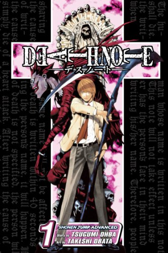

Top 5 recommendations
1. One Piece (July22, 1997 - Ongoing)
Embark on an epic voyage through the high seas with 'One Piece,' a captivating manga series by Eiichiro Oda. Join Monkey D. Luffy and his crew of colorful pirates as they seek the legendary treasure known as the One Piece, encountering thrilling adventures, fierce battles, and unforgettable characters along the way. Prepare to be swept away by the boundless imagination and exhilarating storytelling of one of the greatest manga of all time.

2.Attack On Titan (September9, 2009 - April9, 2021)
Dive into the harrowing world of 'Attack on Titan,' a manga masterpiece by Hajime Isayama. Set in a dystopian society besieged by colossal humanoid creatures, follow the relentless struggle of humanity's last bastion against the Titans. With its intense action, intricate plot twists, and profound themes, 'Attack on Titan' stands as a gripping testament to the resilience of the human spirit.

3.DeathNote (December23, 2001 - May15, 2006)
Delve into the dark realm of 'Death Note,' a gripping manga by Tsugumi Ohba and Takeshi Obata. Witness the chilling tale of Light Yagami, a high school student who stumbles upon a sinister notebook with the power to kill anyone whose name is written within it. Prepare for a riveting psychological thriller that explores the consequences of power, morality, and the battle of wits between Light and the enigmatic detective known only as L.
4.Naruto (September 1999 - November 2014)
Step into the ninja world of 'Naruto,' a beloved manga series by Masashi Kishimoto. Join Naruto Uzumaki, a spirited young ninja with dreams of becoming the strongest in his village, as he navigates a world filled with challenges, friendships, and epic battles. Prepare for an exhilarating journey of self-discovery, loyalty, and the pursuit of one's destiny

5.FullMetal Alchemist (July 2001 - June 2011)
Enter the captivating world of 'Fullmetal Alchemist' where alchemy reigns supreme and boundless adventure awaits. Follow the Elric brothers, Edward and Alphonse, on their quest to uncover the secrets of the Philosopher's Stone, facing perilous challenges and moral dilemmas along the way. Experience a tale of redemption, sacrifice, and the eternal bonds of brotherhood in this timeless masterpiece by Hiromu Arakawa.

About Me:
Moi, I am yonko from North blue, here to guide you sail through the world of Fascinating MangaSSS